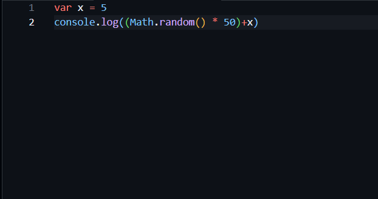
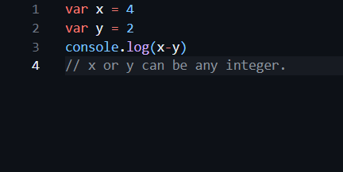
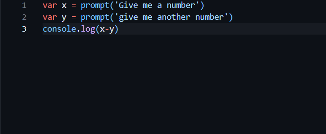

Let's start learning Javascript! Chapter One
1. The console.log() Function: You can use console.log() to print something in the terminal. For example, "console.log(4)" prints 4. Also, using single quotes(''), you can print strings! Without ' marks, you can only print integers and/or varibles.
2. Easy Varibles: You can assign a varible that it's value can't change by using "var x = 5", to break it down, x is the varible name and 5 is the value. If you want a varible that's value can change, use "let y = 2", to break it down, y is the varible name and 2 is the value. To assign a string to a varible, use "var f = 'John', in the code, ' mark does the same thing it does in the console.log('') from lesson one.
3. Easy Math Functions: The List: "Math.abs() returns the absoulute value of a varible, Math.floor() rounds up a varible, Math.random() chooses a random number between 0 and 1." To do math, + is addition, - is subtraction, * is multipulcation, / for division. Using Math.random() for a bigger range, for example 0 to 50, you would multiply 50 to Math.random() like this "Math.random()*50". A line of code using Math functions might look like this "var x = Math.Random()*15".
Let's Practice. Open a javascript editor and try making a subtraction calculator.
Stuck? The answers are bellow.
4. prompt(): How do you ask for input? Use the prompt() function! It's very simple, for example "var x = prompt('John/'s last name is')", the () part is for inserting a question (OR whatever you want to display.) with qoutes or a integer without qoutes. Now armed with this knowledge, how do we add user input to our subtraction calculator project?
Stuck? Here are the answers:
 Back To home Next